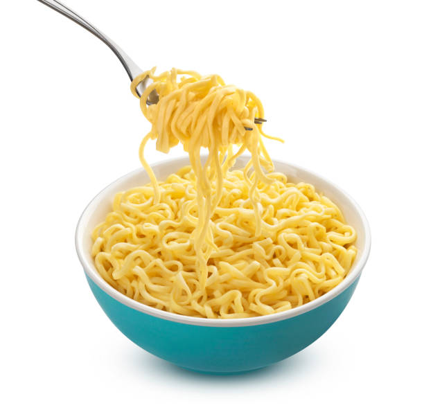

Para fazer essa receita são necessários uma pequena lista de igredientes, são eles:
Usando uma panela adicione 450ml de água e leve ao fogo alto. Aguarde até levantar fervura ( quando tiver borbulhando )
oloque o bloco de miojo na panela. Se quiser que o macarrão fique mais soltinho, você pode ir mexendo delicadamente com um garfo enquanto ele cozinha. Deixe cozinhar por exatos 3 minutos.
Dentro do miojo tem, dessa forma Coloque o bloco de miojo na panela. Se quiser que o macarrão fique mais soltinho, você pode ir mexendo delicadamente com um garfo enquanto ele cozinha. Deixe cozinhar por exatos 3 minutos.
Transfira para um prato ou tigela e consuma imediatamente. :D